//= template/common/favicon.html //= template/common/fonts_preload.html //= template/common/styles.html //= template/common/header.html

Ошибка 404
Страница не найдена. Она не существовала или срок публикации истёк.
На главную
//= template/common/footer.html //= template/common/scripts.html